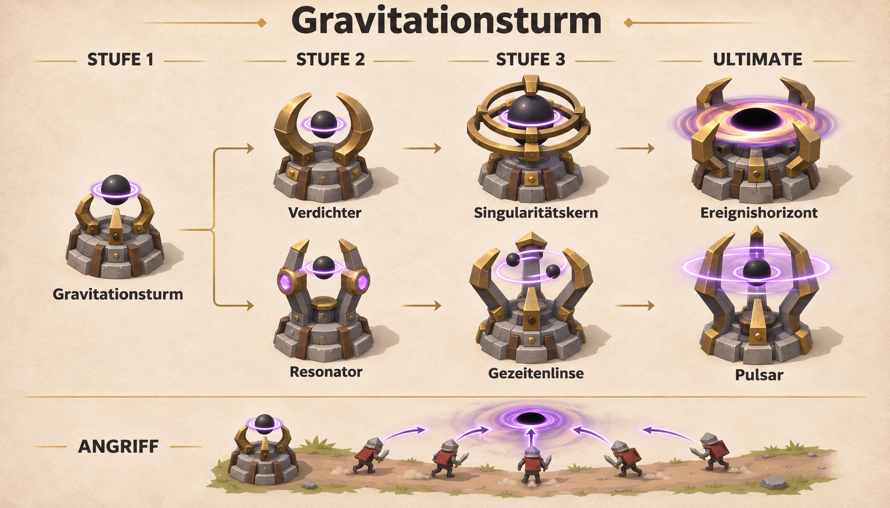

Gruppen bündeln · kurze Kontrolle
Gravitationsturm
55 Gold Grundform

Alle 5 Sekunden entsteht ein schwarzes Loch am anvisierten Straßenpunkt. Es zieht bis zu fünf Gegner aus 55 Einheiten Radius in 0,2 Sekunden höchstens 35 Einheiten entlang ihrer Straße zusammen und bindet sie anschließend für 0,8 Sekunden. 8 Schaden je erfasstem Gegner.
Oberer Pfad · Kontrolle
Ereignishorizont
Ereignishorizont hält bis zu acht Gegner insgesamt 1,6 Sekunden zusammen. Das stärkt vorbereitete Flächenangriffe.
Unterer Pfad · Impulsschaden
Pulsar
Pulsar trifft dieselbe Gruppe zweimal mit je 55 Schaden. Der zweite Impuls fügt Schaden hinzu, die Bindung endet nach insgesamt 0,8 Sekunden.
Stark bei Dichte Gruppen an einer gut vorbereiteten Schadenszone.
Schwach bei Verstreute Gegner, zwei weit auseinanderliegende Fronten und der lange Abstand zwischen den Impulsen.
Startwerte und Ausbaukosten
Goldpreise sind Zukäufe je Stufe. Reichweiten und Radien sind Spieleinheiten. „Schaden / Zeit“ gibt Trefferschaden und Angriffspause an, DPS bedeutet Schaden pro Sekunde. Werte gelten vor den im Regeltext genannten Verteidigungsfaktoren.
| Stufe | Name | Zukauf | Gesamt | Reichweite | Angriff | Wirkung |
|---|---|---|---|---|---|---|
| 1 | Gravitationsturm | 55 G | 55 G | 155 | 8 / 5 s | Radius 55 · 5 Ziele · 35 Zug · 1 s Gesamtzeit |
| 2 · oben | Verdichter | 50 G | 105 G | 165 | 12 / 5,2 s | Radius 65 · 6 Ziele · 35 Zug · 1,1 s Gesamtzeit |
| 3 · oben | Singularitätskern | 75 G | 180 G | 170 | 20 / 5,2 s | Radius 70 · 7 Ziele · 40 Zug · 1,2 s Gesamtzeit |
| 4 · Ultimate | Ereignishorizont | 120 G | 300 G | 180 | 20 / 6 s | Radius 80 · 8 Ziele · 45 Zug · 1,6 s Gesamtzeit |
| 2 · unten | Resonator | 50 G | 105 G | 165 | 22 / 5 s | Radius 55 · 5 Ziele · 35 Zug · 1 s Gesamtzeit |
| 3 · unten | Gezeitenlinse | 75 G | 180 G | 180 | 42 / 5 s | Radius 60 · 5 Ziele · 35 Zug · 0,8 s Gesamtzeit |
| 4 · Ultimate | Pulsar | 120 G | 300 G | 190 | 2 × 55 / 5,8 s | Radius 65 · 6 Ziele · 35 Zug · zweiter Treffer nach 0,8 s |
Spielregeln und Balance-Begründung
Der Turm schafft ein kurzes Zeitfenster für Katapult, Minen und Meteore. Der geringe Eigenschaden bezahlt die Fähigkeit, mehrere Gegner räumlich zusammenzubringen.
Erfasst beim Öffnen eine feste Gruppe. Später eintretende Gegner werden erst vom nächsten Loch erfasst.
Anziehung folgt einer zusammenhängenden Straße zum Ankerpunkt. Maximaler Versatz bleibt begrenzt, an Abzweigungen gibt es keinen Sprung durch Gelände.
Bosse bleiben auf ihrer Position und werden nur ein Viertel so lange gebunden. Gravitation profitiert nicht von einem Rüstungs- oder HP-Prozentschaden.
Rohschaden zählt als arkan, Multiplikatoren für Leben / Rüstung / Magieschild sind 1 / 0,75 / 1,2.